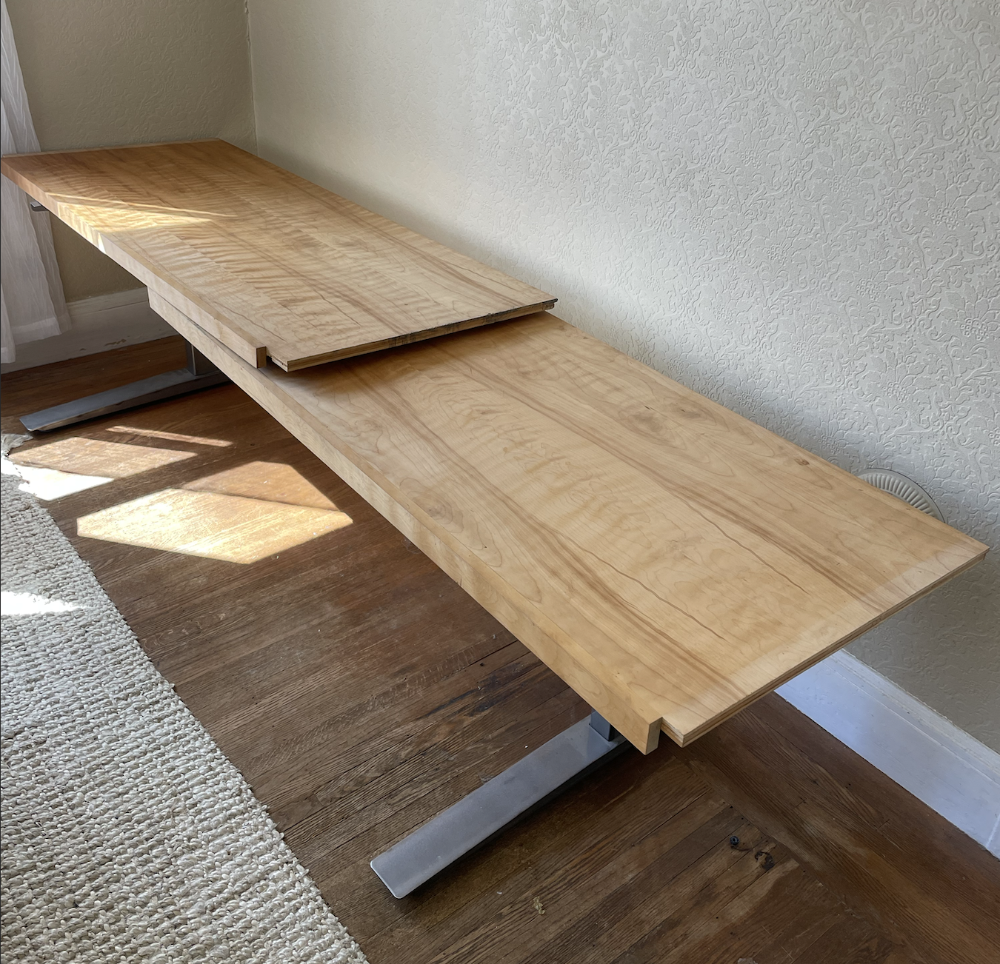
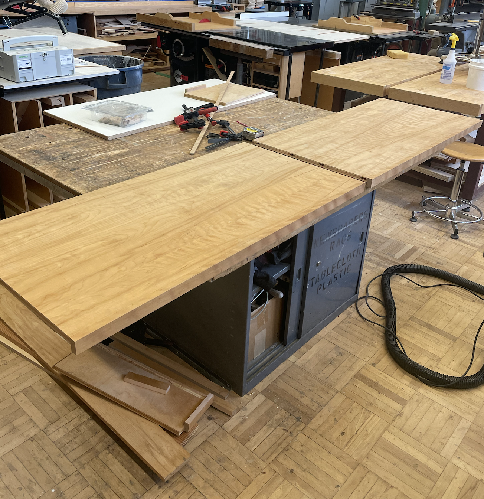
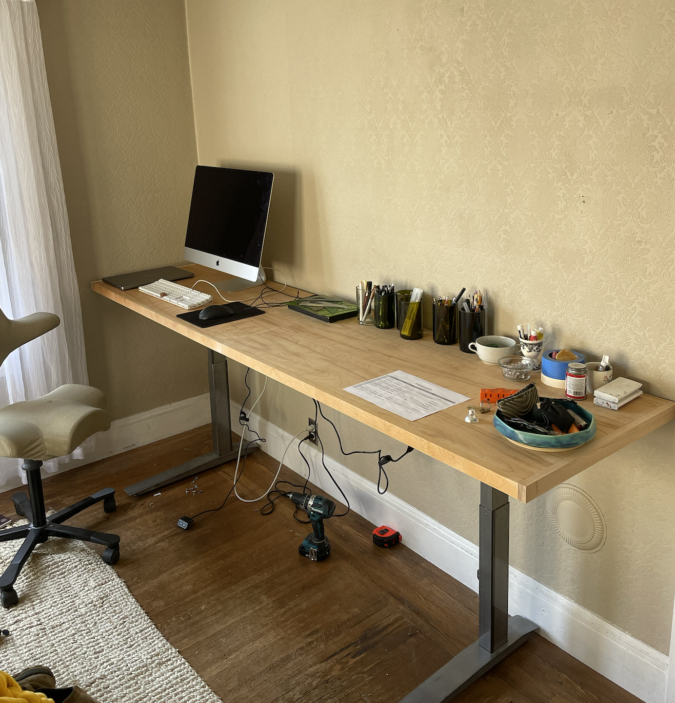

DESK
2023 – This project resides in my bedroom — I found a broken set of piston legs for a sit-stand desk on Craigslist free. I rewired all the connections to get it working again. Additionally, I built a custom extra-long top to fit the back wall of my room. The wood top was made from another Craigslist free item, where I removed the two sides of a bookshelf and joined them together to create the tabletop surface.
  